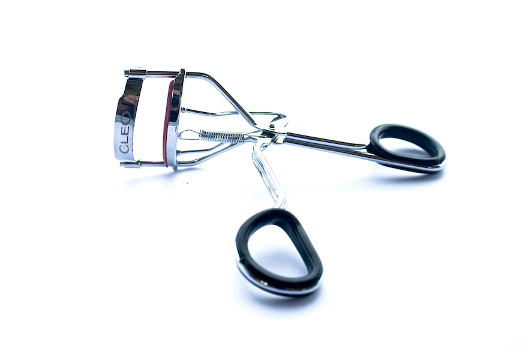
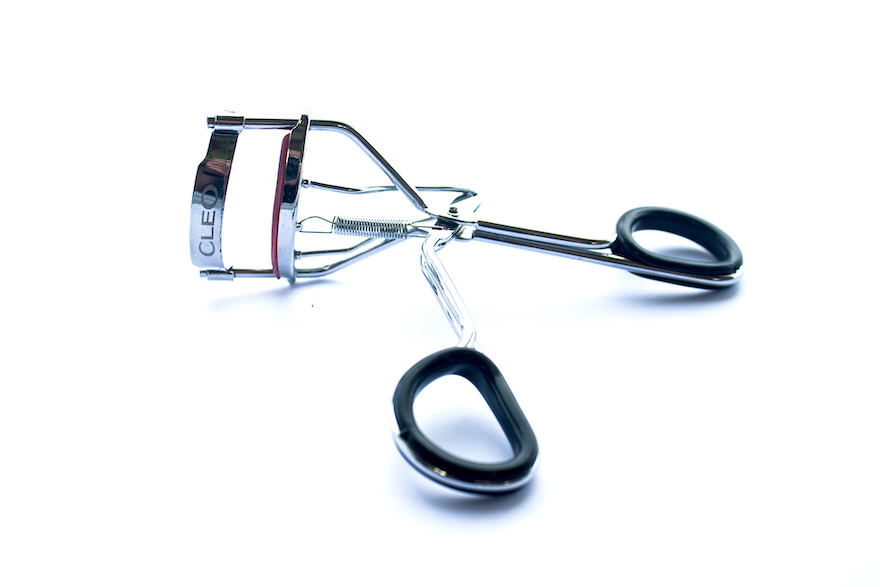
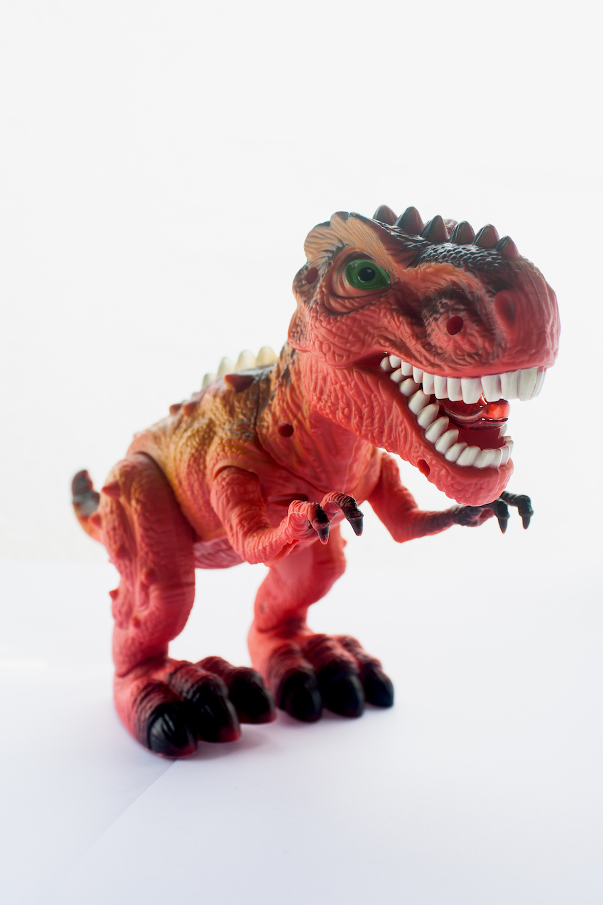
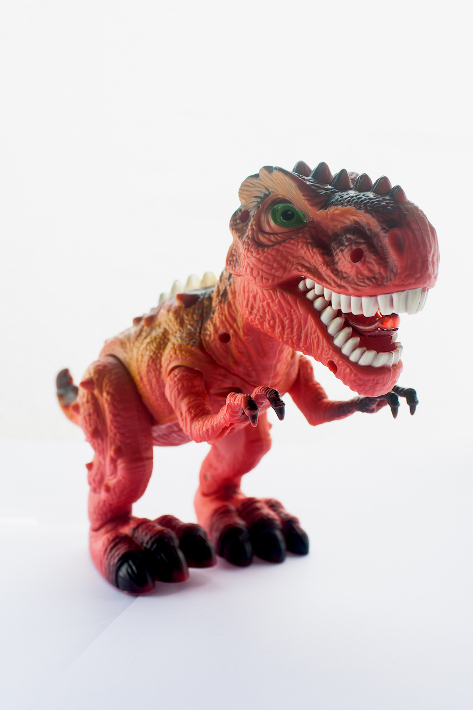

Cliente:
AMG - Escuela Rayo de Luz
Concepto:
Descubriendo Nuevos Entornos Divertidos
Piezas:
Libro de Contenido, Organizador, Rotafolio y Manta I Spy
Técnica y
Software:
Ilustración digital y diagramación Illustrator, Photoshop e Indesign.
AMG International se funda en Guatemala, en el año 1976 debido al terremoto. Por más de 40 años AMG International ha servido a familias vulnerables en Guatemala por medio de estrategias de cuidado integral las cuales se enfoca principalmente
en la educación con valores cristianos como herramienta de desarrollo humano y comunitario. AMG International se encarga de promover oportunidades de educación, aprendizaje, salud, bienestar y espiritualidad a niños y jóvenes que vengan
de familias vulnerables, siendo Rayo de Luz su primer proyecto en el país, estando ubicada en la colonia La Verbena, zona 7, Ciudad de Guatemala.
Por lo que su necesidad principal de basa en la creación de un material educativo para apoyar la enseñanza del idioma inglés en niños de 5 y 6 años, cursando el grado de Párvulos III.
Se creó un libro con el contenido de todo el año escolar, en el que se encuentra cada palabra de los vocabularios ilustrada, y con la palabra en líneas guía para incitar al preescolar a la lectoescritura, así mismo distintas actividades.
Fue diseñado a una sola tinta para optimizar costos, ya que tiene un total de 145 hojas, siendo estas impresas sólo en tiro para que no dificulte sus trazos.
Se crearon una serie de materiales pedagógicos para apoyar la enseñanza de este nuevo idioma para los niños, un planificador y un rotafolio los cuales se trabajan juntos y una manta I spy.
El rotafolio es una recopilación de actividades para reforzar los temas vistos en clase, de manera divertida y al aire libre. Aprovechando que los preescolares tienen un área verde frente a su clase, para hacer uso cada 15 días. Esto los
mantendrá motivados hacía el nuevo idioma. El organizador es para uso exclusivo de los maestros, en el que ellos podrán tomar nota y ver qué materiales se necesitarán para realizar las actividades.
Para la manta I spy, utilizando las ilustraciones del libro para crear unidad, se realizó una ilustración saturada del 90% de las palabras en el vocabulario, esta pieza apoya a la maestra en los exámenes orales y desarrolla destrezas en
los niños como la agilidad.
Se utilizó un grid dinámico, una paleta de color muy alegre y amigable. La asociación ya hacía uso de dos personajes, el león y el mono, los cuales se fueron modificando a lo largo de las piezas para crear unidad. Solamente se usaron tipografías
san serif para dar ese toque amigable y preescolar.


 


 
